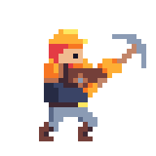
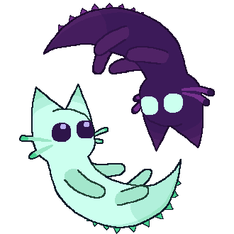
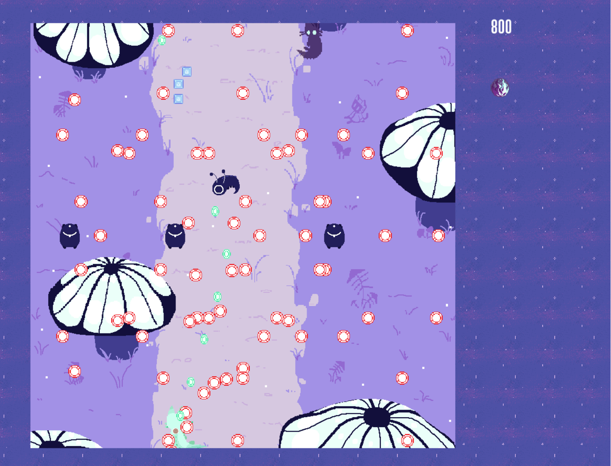

Dwarf Idle
2026

An Idle/Roguelite game about a dwarf breaking through a mountain.
My first Unreal Engine 5 personal project.
Seccia.dev
April - July 2026
2-month internship as Gameplay Developer where I built tutorial samples, organized a game jam, developped demo games and created a language from scratch.
- Designed and built 15 of the 28 tutorial "samples" (movement, logic, randomness...) now integrated in the software's main menu
- Created SEFX, a shader language with a C++ compiler (scanner, parser, bytecode output) and a register-based HLSL VM
- Designed the language grammar to be consistent enough for an LLM to generate working visual effects from a user prompt
- Documented and organized a monthly 48h online game jam hosted on Itch.io
- Developed a puzzle game and co-finished a whack-a-mole game as showcase projects
- Tested the software daily and wrote detailed bug reports
Seccia.dev is a development tool for adventure games, visual novels and escape games, created by Sylvain Seccia.
During this 2-month internship, I worked in a team of three interns to help grow the software's user community.
My main task was creating samples that teach each feature to beginners.
I also wrote SEFX from scratch, which meant learning compiler theory on my own.
I first planned a stack-based interpreter, but it didn't suit GPU optimisation, so I redesigned it as a register-based one.
The effects run smoothly on mid and high-end machines and less well on mobile, because of the limits of an HLSL VM.
Finally, I wrote the rules, format and documentation of a game jam that can be rerun every month.
Angler Engine
A fully functional 3D Game Engine made in 4 weeks.
Advanced rendering using DirectX 12 and Data Oriented Engine logic.
- Encapsulated many of DX12's necessary render classes (Pipeline State Object, Render Target, Depth Stencil...)
- AABB and Sphere collision detection, partitioned using an HGrid
- Added Text and Sprite rendering for UI and their components
- Made most of the demo game
Angler Engine is a 3D Game Engine we made in 4 weeks using DirectX12, my colleagues Aymeric MATTE, Ethan ALVES and I.
Showcase: https://www.youtube.com/watch?v=KMrogO7ZOSo
Multiplayer Space Shooter
...
GC Engine
...
If you are Here

A Shoot'em up where you play as two mirrored dinosaur cats.
One is active, the other isn't; Switch between the two to dodge attacks and use different attack patterns.
If you are Here

This two week school project taught me a lot in my first semester: Basic engine structure and game loop, when and where to load textures and that hard work does pay off.
We had to make a Shoot'em up type game using SFML and what we had seen the week prior about abstraction and common game code architecture.
This was a duo project, although I did most of the programming while my partner worked on the visuals and game design.
https://github.com/Sawful/IfYouAreHere
Console Tactical RPG
Small turn-based Tactical RPG made in C++ and rendered in Console.
- Designed the game around OOP principles (classes, inheritance, polymorphism)
- Implemented tile-based movement with a limited movement range and wall collision
- Created 3 enemy types as derived classes, each with its own behaviour and simple pathfinding
- Built 5 levels of increasing difficulty, with the player needing to defeat every enemy to progress
- Rendered the map, units and UI in the console
Console Tactical RPG is a small turn-based game I made in 1 week to learn object-oriented programming.
The player controls a single character who moves a set number of tiles per turn and cannot walk through walls.
To win, they must clear 5 levels of enemies. Each level raises the difficulty by adding more enemies and mixing the 3 enemy types.
Splitting the game into classes (character, enemies, map, tiles...) kept the code easy to extend, so adding a new enemy type or level only meant adding data or a derived class, not rewriting existing logic.
Console Minesweeper
Minesweeper built in console with C.
My first school project made in a week.
- Built a complete Minesweeper game in C, playable in the console
- Dynamically allocated the game grid in memory, sized according to the chosen difficulty
- Stored and updated each tile's state with binary operations (bit flags and masks)
- Implemented several difficulty levels with different grid sizes and mine counts
- Randomly placed mines at the start of each game
- Wrote the game logic in an imperative style, using pointers to read and update the board
Console Minesweeper is my first school project, made solo in 1 week to learn the basics of C.
The player picks a difficulty, and the game generates a grid of the matching size and scatters the mines at random.
Since the grid size isn't known until runtime, I had to allocate and free the memory manually and pass the board around with pointers, which taught me how memory is laid out and why leaks and invalid accesses happen.
The project also gave me my first experience structuring a program as a set of small functions, with no classes or objects.
ZW Remake
Wave survival game with MOBA controls.
One of my first video game passion projects.
Music Sheet to MIDI
Zombie World Remake is a hobby project I started in August 2023, inspired by the Starcraft 2 custom game mode Zombie World: Unity. It is a wave survival game where players keep moving around the map and can choose to make the game harder as they go, instead of picking a difficulty at the start. Activating special zones raises the challenge and the rewards, and a talent tree lets players try new builds on each playthrough. The game was first built in Unity, but after concerns about changes to Unity's terms of service we moved it to Godot. That migration meant reworking many systems and was a big challenge for a beginner like me, but it taught me a lot. The project is currently on a break, with the transition complete and the remaining features still to implement.
Music Sheet to MIDI
March - September 2023
My first personal coding project which aimed to transcribe sheet music to a MIDI file.
Music Sheet to MIDI
Music Sheet to MIDI was my first personal coding project on Python. The goal was an Optical Music Recognition tool: give it a scanned or photographed music sheet and get a MIDI file back. The MIDI generation and the interface worked, but I never found a reliable way to recognise the notes on the image. None of the three approaches I tried gave good enough results, and I already had new project ideas, so I decided to stop the project. Even unfinished, it taught me how to structure a program with classes, use a debugger, and work with libraries, version control and code formatting tools.